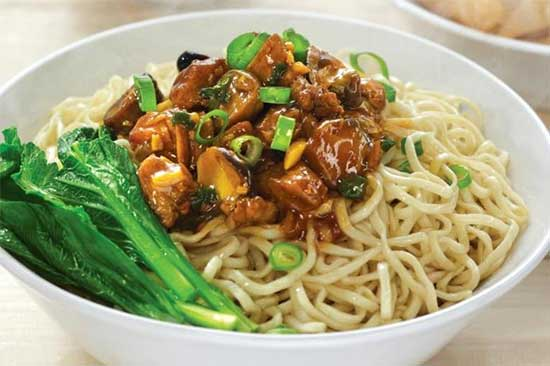

Mie Ayam

Bahan:
- Kemiri 2 butir
- Bawang putih 4 siung
- Daun bawang 2 batang, iris halus
- Bawang merah 3 siung
- Sawi manis 1 ikat, potong-potong
- Daging ayam 250 gr, iris kotak dan rebus
- Gula 1/2 sdm
- Minyak ayam 8 ml
- Air 2 L
- Jahe 1 ruas
- Penyedap rasa 1 sdt
- Mie basah atau mie telur 500 g
- Bawang goreng
- Kecap manis 3 sdm
- Garam 1 sdm
- Ketumbar 1 sdt
- Kecap inggris 2 sdm
- Kecap asin 50 ml
- Tulang ayam
Cara Membuat:
- Rebus air, tambahkan lada bubuk, garam, dan tulang ayam secukupnya.
- Haluskan bumbu yang terdiri dari bawang putih, bawang merah, ketumbar, kunyit, kemiri, dan jahe.
- Tumis ayam yang telah direbus dengan bumbu yang telah dihaluskan.
- Tambahkan garam dan penyedap rasa secukupnya.
- Rebus mie basah atau mie telur hingga matang.
- Rebus sawi yang telah dipotong-potong dengan memakai kuah.
- Selama merebus mie, siapkan mangkuk. Kemudian tambahkan 1 sdm minyak ayam dan sdt merica.
- Masukkan mie yang telah matang ke dalam mangkuk. Kemudian aduk mie hingga tercampur sempurna dengan minyak ayam.
- Tiriskan sawi yang telah direbus, tambahkan dalam mangkuk.
- Tambahkan toping ayam dan juga kuah ayam.
- Mie ayam solo siap disajikan.
Copyright 2019 Slukat Learning Center